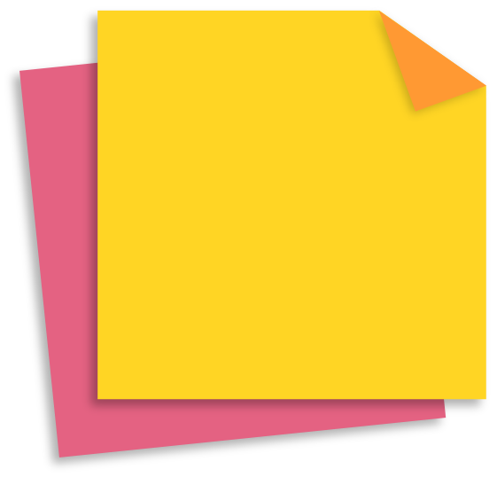
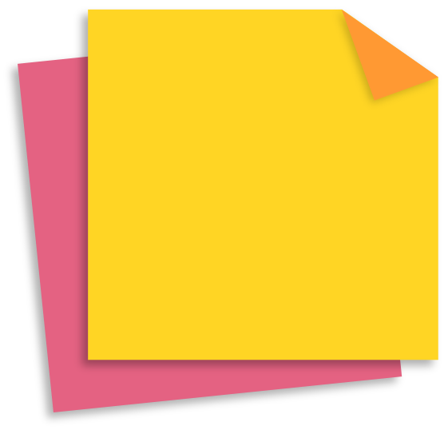

방정환(1899년 11월 9일~1931년 7월 23일)은 일제 강점기의 독립운동가, 아동문화운동가, 어린이 교육인, 사회운동가이며 어린이날의 창시자에요. 방정환 선생이 '소년'을 '어린이'라 부른 이유는 어린이도 젊은이, 늙은이와 동등한 사람으로 봐야 하며 이들과 다르게 어린이에게 무한한 가능성과 힘이 있는 존재로 봤기 때문이에요. 방정환 선생님이 활동하던 당시 어린이 운동도 보호가 아닌 어린이의 잠재성을 자발적으로 드러낼 수 있도록 하는 것을 목표로 했어요.
소파 방정환

잡지 어린이
아동문학가 방정환을 중심으로 개벽사에서 발행했어요. 1923년 3월에 창간되어 1934년 7월에 통권 122호로 폐간했고. 창간 때에는 대체로 보름에 1회꼴로 발행되다가 곧 월간 발행으로 바뀌어서 폐간 때까지 계속됐어요. 창간 때에는 신문처럼 생겼었는데 8호부터는 A5나 B6 정도의 책자형식으로 바뀌었어요. 일반기사는 한글과 한자를 섞어 쓰거나 괄호 안에 한자를 넣었어요. 대신 시나 소설 등은 한글만 썼고요. 잡지 발간이 계속되면서 삽화나 사진을 늘려서 볼거리를 늘렸어요. 창작 동화와 함께 좋은 창작 동요를 많이 실어서 1925년을 즈음엔 동요의 황금시대를 이끌었어요. 이 잡지는 우수한 아동문학가를 배출하는 데 크게 영향을 끼쳤어요.
 
